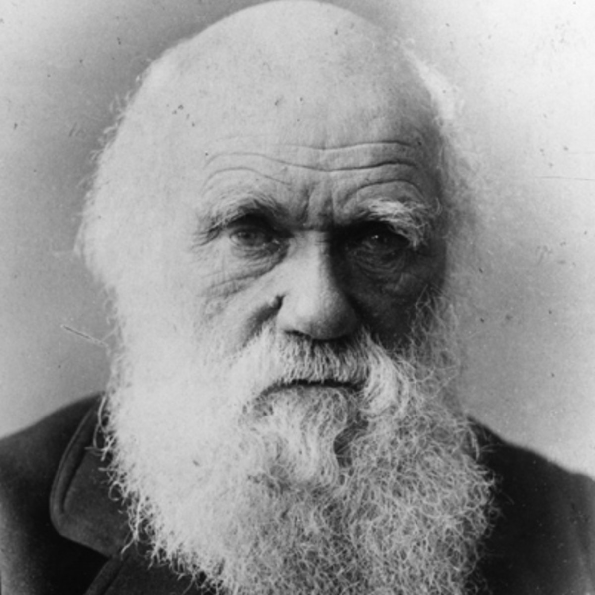

Source: Biography.comIn 1831, Charles Darwin embarked on a 5-year journey around the world on the HMS Beagle that would challenge society's beliefs and establish the basis for modern biology. When he combed through the samples he collected on his journey, he noticed similarities between species on different continents, with variations based on specific environments that are advantageous in those environments.
He began formulating his theory of evolution, which stipulates that species gradually evolve from common ancestors. Species evolve to gain adaptations which allow them to better survive in their environments. His contemporaries believed that species did not change over time or were created over the course of history. The leading religions of the time claimed that God created all the species on the planet; Darwinism was a direct threat to such an idea. To explain his findings to the general public, he borrowed the already-known term "survival of the fittest". Over the course of the next century, breakthroughs about DNA would prove Darwin right.
While Darwin did not venture into sociology, Social Darwinism emerged as a bridge between the theory of evolution and social and economic issues; according to social darwinists, the strong deserve to prey on the weak. As laissez-faire capitalism and the Industrial Revolution spread around the world, Social Darwinism highlighted competition in society and became a dangerous justification for far-right ideologies such as Nazism, fascism, imperialism, racism, eugenics, poverty, and worker abuse.